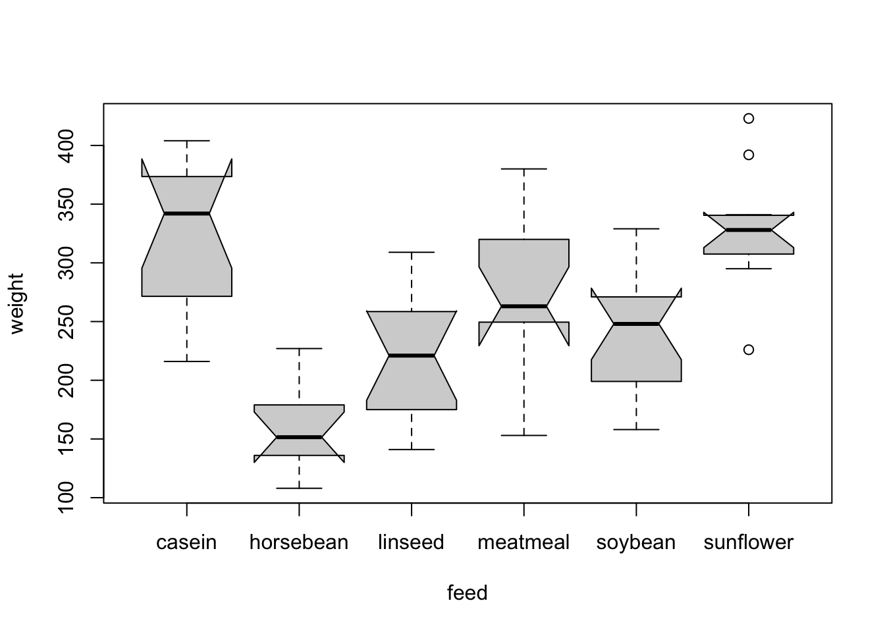
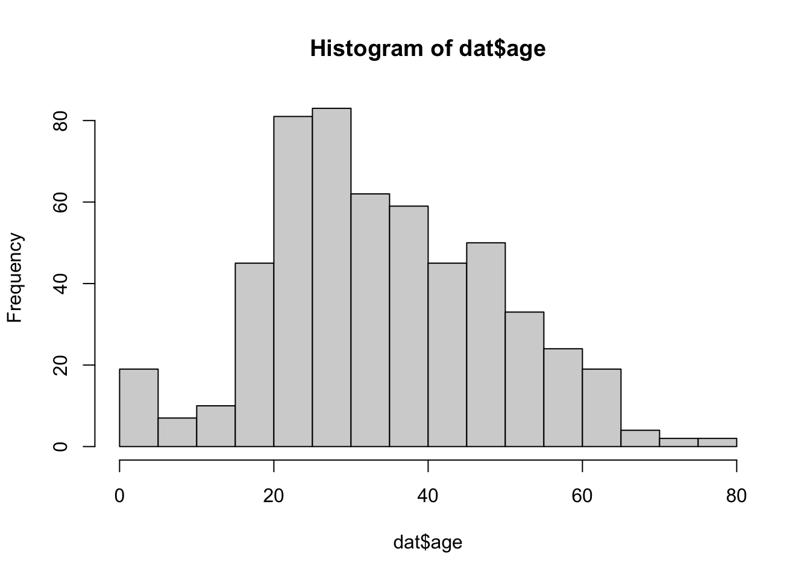
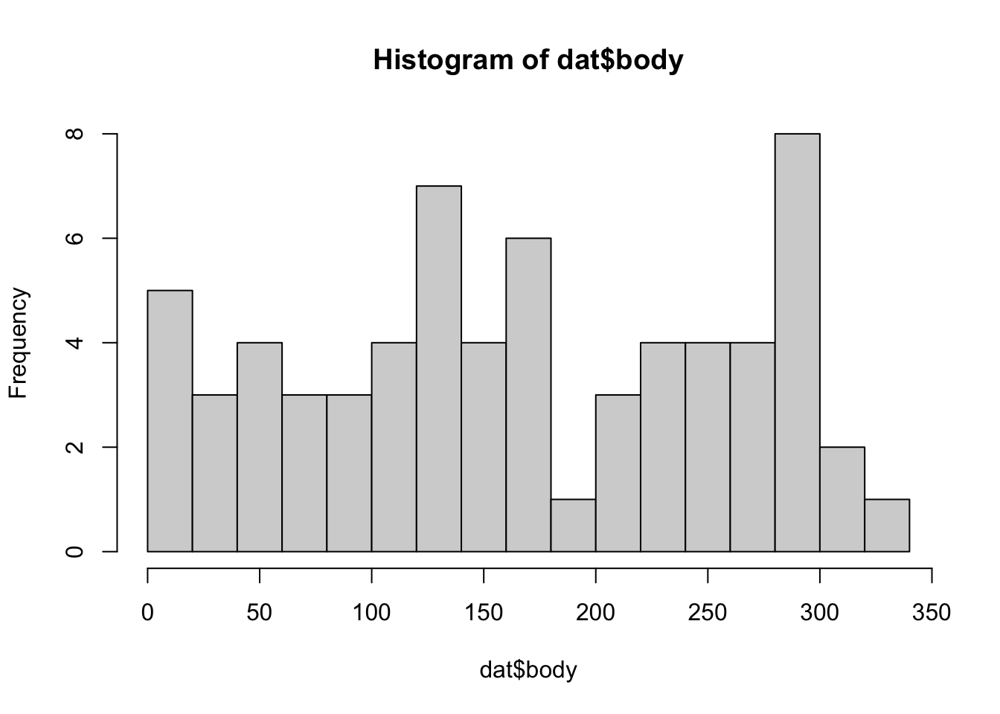
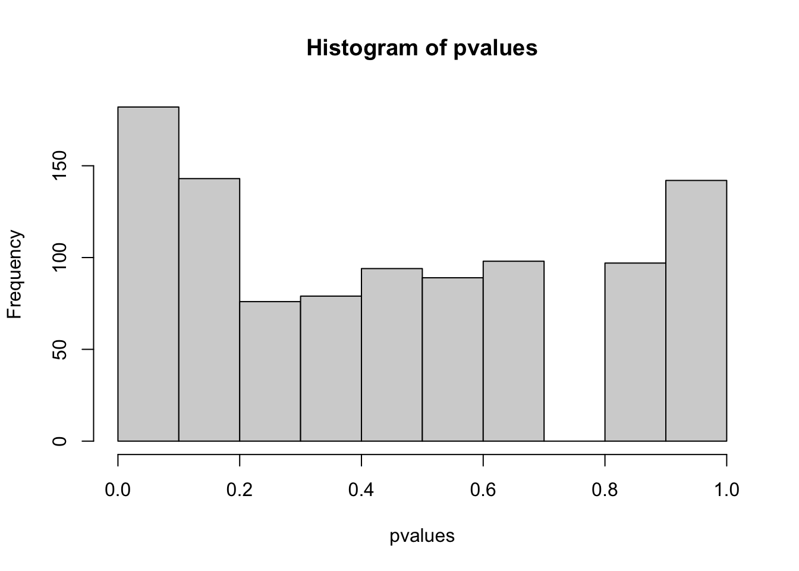

dat = read.table("https://raw.githubusercontent.com/biometry/APES/master/Data/Simone/streams.txt", header = T)Exercise - NHST and statistical tests
Streams
The dataset ‘streams’ contains water measurements taken at different location along 16 rivers: ‘up’ and ‘down’ are water quality measurements of the same river taken before and after a water treatment filter, respectively. We want to find out if this water filter is effective. Use the decision tree to identify the appropriate test for this situation.
The filters were installed between upstream (‘up’) and downstream (‘down’).
1. Task
1. Visualize the data
matplot() can be used to plot several lines at once
par(mfrow = c(1,2))
boxplot(dat, notch = TRUE)
col_num = as.integer(dat[,2] > dat[,1]) + 1
matplot(t(dat),
type = "l",
las = 1,
lty = 1,
col = c("#FA00AA", "#1147AA")[col_num])
legend("topleft", legend = c("worse", "better"), lty = 1, col = c("#FA00AA", "#1147AA"), bty = "n")par(mfrow = c(1,1))
2. Task
2. For identifying an appropriate test for the effect of the water treatment filter, what are your first two choices in the decision tree?
The number of groups to compare is two, up versus down stream. The observations are paired because the water tested up and down stream of the filter is not independent from each other, i.e. the “same” water is measured twice!
3. Task
3. The next decision you have to make is whether you can use a parametric test or not. Apply the Shapiro-Wilk test to check if the data are normally distributed. Are the tests significant and what does that tell you?
The Shapiro-Wilk test is significant (p < 0.05) for down stream data, i.e. we reject H0 (the data is normally distributed). Thus, the data significantly deviate from a normal distribution. The test is not significant for upstream data; the data does not significantly deviate from a normal distribution.
shapiro.test(dat$down)
##
## Shapiro-Wilk normality test
##
## data: dat$down
## W = 0.86604, p-value = 0.02367
shapiro.test(dat$up)
##
## Shapiro-Wilk normality test
##
## data: dat$up
## W = 0.93609, p-value = 0.3038
4. Task
4. Which test is appropriate for evaluating the effect of the filter?
We select a Wilcoxon signed rank test that is appropriate to compare not-normal, paired observations in two groups.
5. Task
5. Does the filter influence the water quality? (The warnings are related to identical values, i.e. ties, and zero differences; we ignore these here) Use to appropriate test to answer this question!
H0 of the Wilcoxon signed rank test is that the location shift between the two groups equals zero, i.e. the difference between the pairs follows a symmetric distribution around zero. As p < 0.05, we can reject H0. The filter significantly influences water quality. (In case of ties also see the function wilcox.test() in the package coin for exact, asymptotic and Monte Carlo conditional p-values)
wilcox.test(dat$down, dat$up, paired = TRUE)
##
## Wilcoxon signed rank test with continuity correction
##
## data: dat$down and dat$up
## V = 8, p-value = 0.004971
## alternative hypothesis: true location shift is not equal to 0H_0_ Hypothesis:
- Shapiro: Data is normal distributed
- Wilcoxon: No differences in their ranks
Chicken
The ‘chickwts’ experiment was carried out to measure and compare the effectiveness of various feed supplements on the growth rate of chickens. We are interested in two questions: Does the feed type influence the chickens weight at all? Which feed types result in significantly different chicken weights?
dat = chickwts
1. Task
Analyze the data and answer the following questions.
1. Visualize the data. What is an appropriate plot for this kind of data?
An appropriate visualization for one numeric and one categorial variable is a boxplot. Using notch = T in the function boxplot(), adds confidence interval for the median (the warning here indicates that we are not very confident in the estimates of the medians as the number of observations is rather small, you can see at the notches that go beyond the boxes).
dat = chickwts
boxplot(weight ~ feed, data = dat)
boxplot(weight ~ feed, data = dat, notch = T)
## Warning in (function (z, notch = FALSE, width = NULL, varwidth = FALSE, : some
## notches went outside hinges ('box'): maybe set notch=FALSE
2. Task
2. Can you apply an ANOVA to this data? What are the assumptions for an ANOVA? Remember: you have to test two things for the groups (for this exercise it is enough if you test the groups “casein” and “horsebean” only).
The two requirements for applying an ANOVA are 1) the data in each group are normally distributed, and 2) the variances of the different groups are equal. For 1) we again use a Shapiro-Wilk test. For 2) we can use the function var.test() or for all feed types the function bartlett.test(). All tests are not significant, and we thus have no indication to assume that the data is not-normally distributed or that the variances are different. We can use an ANOVA.
# get data of each group
casein = dat$weight[dat$feed == "casein"]
horsebean = dat$weight[dat$feed == "horsebean"]
shapiro.test(casein)
##
## Shapiro-Wilk normality test
##
## data: casein
## W = 0.91663, p-value = 0.2592
shapiro.test(horsebean)
##
## Shapiro-Wilk normality test
##
## data: horsebean
## W = 0.93758, p-value = 0.5264
# H0 normally distributed
# not rejected, normality assumption is okay
var.test(casein, horsebean)
##
## F test to compare two variances
##
## data: casein and horsebean
## F = 2.7827, num df = 11, denom df = 9, p-value = 0.1353
## alternative hypothesis: true ratio of variances is not equal to 1
## 95 percent confidence interval:
## 0.711320 9.984178
## sample estimates:
## ratio of variances
## 2.782737
# H0 ratio of variances is 1 = groups have the same variance
# not rejected, same variances is okay
### Extra: testing the assumptions for all groups:
# Normality test using the dplyr package
library(dplyr)
##
## Attaching package: 'dplyr'
## The following objects are masked from 'package:stats':
##
## filter, lag
## The following objects are masked from 'package:base':
##
## intersect, setdiff, setequal, union
dat %>%
group_by(feed) %>%
summarise(p = shapiro.test(weight)$p)
## # A tibble: 6 × 2
## feed p
## <fct> <dbl>
## 1 casein 0.259
## 2 horsebean 0.526
## 3 linseed 0.903
## 4 meatmeal 0.961
## 5 soybean 0.506
## 6 sunflower 0.360
# Bartlett test for equal variances
bartlett.test(weight ~ feed, dat)
##
## Bartlett test of homogeneity of variances
##
## data: weight by feed
## Bartlett's K-squared = 3.2597, df = 5, p-value = 0.66
3. Task
3. Apply an ANOVA or the non-parametric test. How would you describe the result in a thesis or publication?
H0 of the ANOVA is that feed has no influence on the chicken weight. As p < 0.05, we reject H0. In the result section, we would write something like: “The feed type significantly influenced the chicken weight (ANOVA, p = 5.94e-10).”
fit = aov(weight ~ feed, data = dat)
summary(fit)
## Df Sum Sq Mean Sq F value Pr(>F)
## feed 5 231129 46226 15.37 5.94e-10 ***
## Residuals 65 195556 3009
## ---
## Signif. codes: 0 '***' 0.001 '**' 0.01 '*' 0.05 '.' 0.1 ' ' 1The answer “The chicken weights differ significantly between the six feed types (ANOVA, p = 5.94e-10).” is not precise enough - there are significant differences, but an ANOVA doesn’t test if this is true for all comparisons. ANOVA only tests globally.
4. Task
4. Also apply the alternative test and compare p-values. Which of the tests has a higher power?
The non-parametric alternative of an ANOVA is the Kruskal-Wallis test, which should be applied if the data is not normally distributed. In this example, the test comes to the same conclusion: H0 is rejected, the feed type has a significant effect on the chicken weight. The p-value, however, is not as small as in the ANOVA. The reason for this is that non-parametric tests have a lower power than parametric ones as they only use the ranks of the data. Therefore, the ANOVA is preferred over the non-parametric alternative in case its assumptions are fulfilled.
kruskal.test(chickwts$weight, chickwts$feed)
##
## Kruskal-Wallis rank sum test
##
## data: chickwts$weight and chickwts$feed
## Kruskal-Wallis chi-squared = 37.343, df = 5, p-value = 5.113e-07The p-value in the Kruskal-Wallis test is not as small as in the ANOVA. The reason for this is that non-parametric tests have a lower power than parametric ones as they only use the ranks of the data. Therefore, the ANOVA is preferred over the non-parametric alternative in case its assumptions are fulfilled.
5. Task
5. Use the result of the ANOVA to carry out a post-hoc test. How many of the pairwise comparisons indicate significant differences between the groups?
TukeyHSD(fit)
## Tukey multiple comparisons of means
## 95% family-wise confidence level
##
## Fit: aov(formula = weight ~ feed, data = dat)
##
## $feed
## diff lwr upr p adj
## horsebean-casein -163.383333 -232.346876 -94.41979 0.0000000
## linseed-casein -104.833333 -170.587491 -39.07918 0.0002100
## meatmeal-casein -46.674242 -113.906207 20.55772 0.3324584
## soybean-casein -77.154762 -140.517054 -13.79247 0.0083653
## sunflower-casein 5.333333 -60.420825 71.08749 0.9998902
## linseed-horsebean 58.550000 -10.413543 127.51354 0.1413329
## meatmeal-horsebean 116.709091 46.335105 187.08308 0.0001062
## soybean-horsebean 86.228571 19.541684 152.91546 0.0042167
## sunflower-horsebean 168.716667 99.753124 237.68021 0.0000000
## meatmeal-linseed 58.159091 -9.072873 125.39106 0.1276965
## soybean-linseed 27.678571 -35.683721 91.04086 0.7932853
## sunflower-linseed 110.166667 44.412509 175.92082 0.0000884
## soybean-meatmeal -30.480519 -95.375109 34.41407 0.7391356
## sunflower-meatmeal 52.007576 -15.224388 119.23954 0.2206962
## sunflower-soybean 82.488095 19.125803 145.85039 0.0038845You can also summarize this more formally:
aov_post <- TukeyHSD(fit)
sum(aov_post$feed[,4] < 0.05)
## [1] 8
6. Task
6. Which conclusion about the feed types ‘meatmeal’ and ‘casein’ is correct?
The experiment did not reveal a significant weight difference between the feed types ‘meatmeal’ and ‘casein’. Remember that we cannot prove or accept H0; we can only reject it.
You can also visualize the comparisons using the function glht() from the multcomp package.
library(multcomp) # install.packages("multcomp")
## Loading required package: mvtnorm
## Loading required package: survival
## Loading required package: TH.data
## Loading required package: MASS
##
## Attaching package: 'MASS'
## The following object is masked from 'package:dplyr':
##
## select
##
## Attaching package: 'TH.data'
## The following object is masked from 'package:MASS':
##
## geyser
tuk <- glht(fit, linfct = mcp(feed = "Tukey"))
# extract information
tuk.cld <- cld(tuk)
# use sufficiently large upper margin
old.par <- par(mai=c(1,1,1.25,1), no.readonly = TRUE)
# plot
plot(tuk.cld)par(old.par)Titanic
The dataset ‘titanic’ from the EcoData package (not to confuse with the dataset ‘Titanic’) provides information on individual passengers of the Titanic.
library(EcoData) #or: load("EcoData.Rdata"), if you had problems with installing the package
dat = titanicAnswer the following questions.
1. Task
- We are interested in first and second class differences only. Reduce the dataset to these classes only. How can you do this in R?
The dataset can be reduced in different ways. All three options result in a dataset with class 1 and 2 only.
library(EcoData)
dat = titanic
dat = dat[dat$pclass == 1 | dat$pclass == 2, ]
dat = dat[dat$pclass %in% 1:2, ] # the same
dat = dat[dat$pclass != 3, ] # the same
2. Task
- Does the survival rate between the first and second class differ? Hint: you can apply the test to a contigency table of passenger class versus survived, i.e.
table(dat$pclass, dat$survived).
We use the test of equal proportions here. H0, proportions in the two groups are equal, is rejected. The survival probability in class 1 and class 2 is significantly different. Note that the estimated proportions are for mortality not for survival because 0=died is in the first column of the table. Thus it is considered the “success” in the prop.test().
table(dat$pclass, dat$survived)
##
## 0 1
## 1 123 200
## 2 158 119
prop.test(table(dat$pclass, dat$survived))
##
## 2-sample test for equality of proportions with continuity correction
##
## data: table(dat$pclass, dat$survived)
## X-squared = 20.772, df = 1, p-value = 5.173e-06
## alternative hypothesis: two.sided
## 95 percent confidence interval:
## -0.2717017 -0.1074826
## sample estimates:
## prop 1 prop 2
## 0.3808050 0.5703971
3. Task
- Is the variable passenger age normally distributed?
The distribution of passenger age significantly differs from normal.
hist(dat$age, breaks = 20)
shapiro.test(dat$age)
##
## Shapiro-Wilk normality test
##
## data: dat$age
## W = 0.9876, p-value = 0.00014
4. Task
- Is the variable Body Identification Number (body) uniformly distributed?
The distribution of body significantly differs from uniform.
hist(dat$body, breaks = 20)
ks.test(dat$body, "punif")
##
## Exact one-sample Kolmogorov-Smirnov test
##
## data: dat$body
## D = 1, p-value = 2.22e-16
## alternative hypothesis: two-sided
5. Task
- Is the correlation between fare and age significant?
The correlation between fare and age is non-significant. You can also plot the data using the scatter.smooth function.
cor.test(dat$fare, dat$age)
##
## Pearson's product-moment correlation
##
## data: dat$fare and dat$age
## t = 1.9326, df = 543, p-value = 0.0538
## alternative hypothesis: true correlation is not equal to 0
## 95 percent confidence interval:
## -0.001346105 0.165493055
## sample estimates:
## cor
## 0.08265257
scatter.smooth(dat$fare, dat$age)
Simulation of Type I and II error
This is an additional task for those who are fast! Please finish the other parts first before you continue here!
Analogously to the previous example of simulating the test statistic, we can also simulate error rates. Complete the code …
PperGroup = 50
pC = 0.5
pT = 0.5
pvalues = rep(NA, 1000)
for(i in 1:1000){
control = rbinom(n = 1, size = PperGroup, prob = pC)
treat = rbinom(n = 1, size = PperGroup, prob = pT)
#XXXX
}… and answer the following questions for the prop.test in R:
1. Task
- How does the distribution of p-values and the number of false positive (Type I error) look like if pC = pT
PperGroup = 50
pC = 0.5
pT = 0.5
pvalues = rep(NA, 1000)
positives = rep(NA, 1000)
for(i in 1:1000){
control = rbinom(1, PperGroup, prob = pC )
treatment = rbinom(1, PperGroup, prob = pT )
pvalues[i] = prop.test(c(control, treatment), rep(PperGroup, 2))$p.value
positives[i] = pvalues[i] <= 0.05
}
hist(pvalues)
table(positives)
## positives
## FALSE TRUE
## 961 39
mean(positives)
## [1] 0.039
# type I error rate = false positives (if data simulation etc. is performed several times, this should be on average 0.05 (alpha))
2. Task
- How does the distribution of p-values and the number of true positive (Power) look like if pC != pT, e.g. 0.5, 0.6
pC != pT with difference 0.1
PperGroup = 50
pC = 0.5
pT = 0.6
pvalues = rep(NA, 1000)
positives = rep(NA, 1000)
for(i in 1:1000){
control = rbinom(1, PperGroup, prob = pC )
treatment = rbinom(1, PperGroup, prob = pT )
pvalues[i] = prop.test(c(control, treatment), rep(PperGroup, 2))$p.value
positives[i] = prop.test(c(control, treatment), rep(PperGroup, 2))$p.value < 0.05
}
hist(pvalues)table(positives)
## positives
## FALSE TRUE
## 858 142
mean(pvalues < 0.05) # = power (rate at which effect is detected by the test)
## [1] 0.142
# power = 1- beta > beta = 1-power = typeII error rate
1-mean(pvalues < 0.05)
## [1] 0.858
## Factors increasing power and reducing type II errors:
# - increase sample size
# - larger real effect size (but this is usually fixed by the system)
3. Task
- How does the distribution of p-values and the number of false positive (Type I error) look like if you modify the for loop in a way that you first look at the data, and then decide if you test for greater or less?
You first look at the data, and then decide if you test for greater or less:
# ifelse(test,yes,no)
PperGroup = 50
pC = 0.5
pT = 0.5
for(i in 1:1000){
control = rbinom(1, PperGroup, prob = pC )
treatment = rbinom(1, PperGroup, prob = pT )
pvalues[i] = prop.test(c(control, treatment), rep(PperGroup, 2),
alternative= ifelse(mean(control)>mean(treatment),
"greater","less"))$p.value
positives[i] = prop.test(c(control, treatment), rep(PperGroup, 2),
alternative= ifelse(mean(control)>mean(treatment),
"greater","less"))$p.value < 0.05
}
hist(pvalues)
table(positives)
## positives
## FALSE TRUE
## 938 62
mean(pvalues < 0.05)
## [1] 0.062
# higher false discovery rate